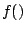
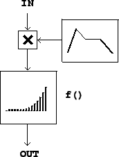
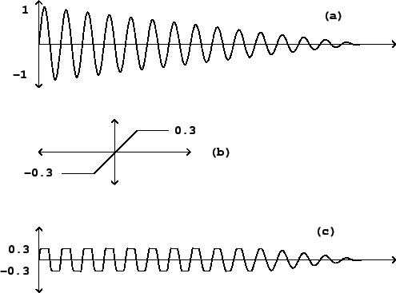
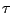
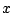
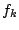

Another approach to modulating a signal, called waveshaping, is simply to pass it through a suitably chosen nonlinear function. A block diagram for doing this is shown in Figure 5.5. The function  (called the transfer function) distorts the incoming waveform into a different shape. The new shape depends on the shape of the incoming wave, on the transfer function, and also--crucially--on the amplitude of the incoming signal. Since the amplitude of the input waveform affects the shape of the output waveform (and hence the timbre), this gives us an easy way to make a continuously varying family of timbres, simply by varying the input level of the transformation. For this reason, it is customary to include a leading amplitude control as part of the waveshaping operation, as shown in the block diagram.
|  |
The amplitude of the incoming waveform is called the waveshaping index. In many situations a small index leads to relatively little distortion (so that the output closely resembles the input) and a larger one gives a more distorted, richer timbre.
Figure 5.6 shows a familiar example of waveshaping, in which amounts to a clipping function. This example shows clearly how the input amplitude--the index--can affect the output waveform. The clipping function passes its input to the output unchanged as long as it stays in the interval between -0.3 and +0.3. So when the input does not exceed 0.3 in absolute value, the output is the same as the input. But when the input grows past the limits, the output stays within; and as the amplitude of the signal increases the effect of this clipping action is progressively more severe. In the figure, the input is a decaying sinusoid. The output evolves from a nearly square waveform at the beginning to a pure sinusoid at the end. This effect will be well known to anyone who has played an instrument through an overdriven amplifier. The louder the input, the more distorted will be the output. For this reason, waveshaping is also sometimes called distortion.
|  |
Figure 5.7 shows a much simpler and easier to analyse situation,
in which the transfer function simply squares the input:
 |
Keeping the same transfer function, we now consider the effect of sending in a
combination of two sinusoids with amplitudes  and
and  , and angular
frequencies
, and angular
frequencies  and
and  . For simplicity, we'll omit the initial phase
terms. We set:
. For simplicity, we'll omit the initial phase
terms. We set:
In contrast with ring modulation, which is a linear function of its input signal, waveshaping is nonlinear. While we were able to analyze linear processes by considering their action separately on all the components of the input, in this nonlinear case we also have to consider the interactions between components. The results are far more complex--sometimes sonically much richer, but, on the other hand, harder to understand or predict.
In general, we can show that a periodic input, no matter how complex, will
repeat at the same period after waveshaping: if the period is  so that
Combinations of periodic tones at consonant intervals can give rise to
distortion products at subharmonics. For instance, if two periodic signals 
and are a musical fourth apart (periods in the ratio 4:3), then the sum of
the two repeats at the lower rate given by the common subharmonic. In
equations we would have:
To get a somewhat more explicit analysis of the effect of waveshaping on
an incoming signal, it is sometimes useful to write the function  as
a finite or infinite
power series:
as
a finite or infinite
power series:
The individual terms' spectra can be found by applying the cosine product
formula repeatedly:
The negative-frequency terms (which have been shown separately here for clarity) are to be combined with the positive ones; the spectral envelope is folded into itself in the same way as in the ring modulation example of Figure 5.4.
As long as the coefficients  are all positive numbers or zero, then so
are all the amplitudes of the sinusoids in the expansions above. In this
case all the phases stay coherent as  varies and so we get a widening
of the spectrum (and possibly a drastically increasing amplitude) with
increasing values of
varies and so we get a widening
of the spectrum (and possibly a drastically increasing amplitude) with
increasing values of  . On the other hand, if some of the are
positive and others negative, the different expansions will interfere
destructively; this will give a more complicated-sounding spectral evolution.
. On the other hand, if some of the are
positive and others negative, the different expansions will interfere
destructively; this will give a more complicated-sounding spectral evolution.
Note also that the successive expansions all contain only even or only odd
partials. If the transfer function (in series form) happens to contain only
even powers:
Many mathematical tricks have been proposed to use waveshaping to generate specified spectra. It turns out that you can generate pure sinusoids at any harmonic of the fundamental by using a Chebychev polynomial as a transfer function [Leb79] [DJ85], and from there you can go on to build any desired static spectrum (Example E05.chebychev.pd demonstrates this.) Generating families of spectra by waveshaping a sinusoid of variable amplitude turns out to be trickier, although several interesting special cases have been found, some of which are developed in detail in Chapter 6.